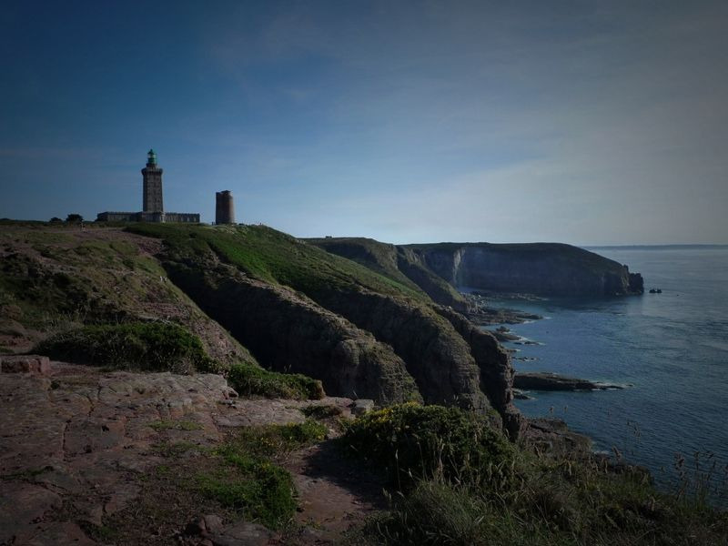

Wed, 10 Nov 2010 15:30:25 · France · Bretagne · Britanny · travel · sea · photo
cap frehel bretagne france taken with

Cap Frehel, Bretagne, France.
• Taken with Leica.
Wed, 10 Nov 2010 15:30:25 · France · Bretagne · Britanny · travel · sea · photo

Cap Frehel, Bretagne, France.
• Taken with Leica.